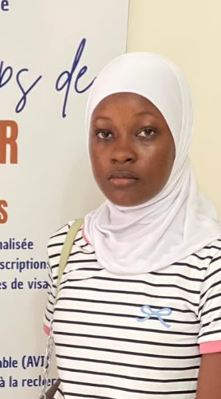

Mbayangue Kouta
— Étudiante en licence 1 en droit
Université d’Artois, faculté de droit, Douai, France
« Je suis vraiment satisfaite de mon expérience avec Einstein
Services. Ils m’ont accompagnée du début à la fin de ma procédure
pour venir en France. L’équipe a toujours été à l’écoute,
disponible et rassurante. Merci pour votre soutien et votre aide
tout au long de cette belle aventure. Je recommande leurs services
sans hésitation ! »
« Je tiens à remercier sincèrement toute l’équipe d’Einstein
Services pour son aide et son accompagnement. Merci de m’avoir
aidée à rédiger mon CV, à faire mes candidatures jusqu’à mon
acceptation en école et en entreprise pour mon alternance. Merci
également pour votre accompagnement dans les démarches de visa
jusqu’à mon arrivée en France. Votre soutien et vos conseils
m’ont beaucoup aidée à réaliser mon projet. Je vous suis très
reconnaissante. Merci à toute l’équipe. 🙏 »
RD
Rokhy Dramé
— BTS Pilotage des Procédés, 2e année
Lycée de l’Escaut, Valenciennes, France
« Je tiens à remercier chaleureusement Einstein Services pour
leur aide et leur accompagnement dans mes démarches de visa.
L’équipe est très professionnelle, à l’écoute et toujours
disponible pour répondre aux questions. J’ai beaucoup apprécié
leur gentillesse et leur disponibilité tout au long de mes
démarches. Je recommande vivement leurs services à toutes les
personnes qui souhaitent être accompagnées dans leur projet de
départ à l’étranger. »
« Einstein Services est une agence transparente et fiable. Elle
m’a accompagné tout au long de mon parcours, jusqu’à mon
admission. Son accompagnement s’est poursuivi pendant mes
démarches et jusqu’à l’obtention de mon visa. L’agence continue
de me conseiller et de m’orienter pendant mon séjour en France.
Je la recommande à tous les étudiants éligibles qui souhaitent
poursuivre leurs études à l’étranger, notamment aux nouveaux
bacheliers et aux élèves de terminale. »
« Après mon baccalauréat, je souhaitais poursuivre mes études
en France sans savoir par où commencer. Einstein Services m’a
accompagnée à chaque étape, du choix de la formation jusqu’à
l’obtention du visa. Aujourd’hui, je suis en Licence 1 Sciences
de la vie et je recommande l’agence à tous les étudiants qui
ont un projet d’études à l’étranger. »
« J'ai découvert Einstein Services sur TikTok alors que j'étais
presque désespéré et pressé par le temps pour trouver un garant.
J'ai contacté l'agence et reçu les bonnes informations. J'ai
obtenu mon AVI grâce à Einstein Services, ce qui m'a permis
d'obtenir mon visa. Je recommande fortement leurs services. »
Ndèye Aby Cissé
— Étudiante en 1re année de licence STAPS
Ancienne élève du lycée Seydina Limamou Laye
Lauréate du Concours général en EPS deux années consécutives : en première en 2025 et en terminale en 2026
Université de Picardie Jules Verne (UPJV), Amiens, France
« Je tiens à exprimer mes sincères remerciements à toute
l'équipe d'Einstein Services pour son accompagnement, son
professionnalisme et son soutien tout au long de ma procédure
Campus France, jusqu'à l'obtention de mon visa avec AVI.
Merci pour votre disponibilité, vos conseils, votre patience et
votre engagement à chaque étape de cette démarche. Grâce à votre
accompagnement, j'ai pu avancer plus sereinement vers la
réalisation de mon projet d'études en France. Je suis vraiment
reconnaissante pour tout le travail que vous avez accompli à mes
côtés. Vous avez joué un rôle important dans la concrétisation
de ce projet, et je ne manquerai pas de vous recommander à
d'autres étudiants qui souhaitent être accompagnés dans leurs
démarches.
Un grand merci à Einstein Services pour tout ! 🙏❤️ Que Dieu
vous bénisse et vous accorde encore plus de réussite dans vos
activités. Vous contribuez à réaliser les rêves de nombreux
étudiants. »
« Ma première demande de visa a été refusée le 21 août 2025,
car l'agent estimait que je ne disposais pas de moyens
financiers suffisants pour étudier en France. Comme la date
limite de dépôt approchait, Einstein Services m'a accompagné
pour obtenir une attestation de virement irrévocable (AVI) en
48 heures. J'ai finalement obtenu mon visa après avoir fourni
cette AVI. Je recommande vivement l'agence Einstein Services. »
« Je suis sénégalais et étudiant en 2e année de génie civil au
Collège communautaire du Nouveau-Brunswick, au Canada. Einstein
Services m'a accompagné tout au long de ma procédure et
continue de m'orienter et de m'aider dans d'autres démarches.
L'équipe est fiable, transparente et honnête. Je recommande
leurs services à tous les étudiants qui préparent leur projet. »
OB
Oumou Seydi Baldé
— Admise en PGE, AN4, pré-spécialisation Finance
INSEEC Grande école Paris, France
« Je tiens à remercier sincèrement Einstein Services pour son
accompagnement et ses conseils tout au long de ma procédure.
Grâce à leur soutien, j'ai pu concrétiser mon projet d'études
en France. Je suis très reconnaissante envers toute l'équipe
pour son professionnalisme et son aide précieuse. Merci à
Einstein Services d'avoir contribué à la réalisation de mon
rêve. »
« Mon expérience avec Einstein Services a été très enrichissante.
Grâce à leur accompagnement, j'ai pu concrétiser mon projet
d'études en France et bénéficier de conseils précieux tout au
long de mes démarches. Malgré les difficultés rencontrées, leur
soutien et leur disponibilité m'ont permis de rester motivé et
de poursuivre mon objectif. Je remercie toute l'équipe pour son
professionnalisme et son engagement. »
« Je tiens à exprimer toute ma gratitude envers Einstein Services
pour son accompagnement tout au long de mes démarches Campus
France et de ma demande de visa étudiant. L'équipe a su
m'orienter, répondre à mes questions et m'accompagner avec
patience jusqu'à l'aboutissement de mes démarches. Je recommande
vivement cette agence à tous ceux qui souhaitent poursuivre
leurs études en France et recherchent un accompagnement sérieux
et de qualité. »
« Je tiens à adresser mes sincères remerciements à l'agence
Einstein Services pour son accompagnement et son soutien dans
mes démarches Campus France. Grâce à leur aide, leurs conseils
et leur disponibilité, j'ai pu avancer plus sereinement dans
mon projet d'études en France. L'équipe m'a guidée tout au long
des différentes étapes et a contribué à rendre les démarches
plus simples et plus compréhensibles.
Je suis très reconnaissante envers toute l'équipe pour son
professionnalisme, sa patience et son engagement. Merci à
Einstein Services d'avoir contribué à la réalisation de mon
projet académique. Je recommande vivement leurs services à
toute personne qui souhaite être accompagnée dans ses démarches
Campus France.
Merci infiniment à toute l'équipe Einstein Services ! 🙏🏽❤️ »
« Aujourd'hui, je tiens à adresser mes remerciements les plus
sincères à l'équipe d'Einstein Services pour son merveilleux
travail lors de ma procédure Campus France. Monsieur Diallo
(Einstein Services) a soumis mon dossier et s'est occupé de
toutes les démarches nécessaires avec sérieux, rigueur et
disponibilité. Après mon admission, l'agence ne m'a pas
laissée seule : elle m'a guidée pas à pas dans mes démarches
de visa. Alhamdoulilah, grâce à ce suivi, je suis actuellement
en France pour poursuivre mes études. Je recommande vivement
cette agence à tous ceux qui souhaitent étudier en France et
ont besoin d'un accompagnement fiable. »
« J'ai été accompagné par Einstein Services dans mon projet
d'études en France. Cet accompagnement m'a aidé dans mes
démarches et m'a permis d'avancer plus sereinement. Aujourd'hui,
je poursuis mes études en France et continue à travailler pour
atteindre mes objectifs professionnels. Je remercie Einstein
Services pour son accompagnement. »

Saër Fall
— BUT 2 Génie mécanique et productique
IUT de Saint-Denis, Université Sorbonne Paris Nord, France
« Grâce à l'accompagnement d'Einstein Services, j'ai pu avancer
dans mon projet d'études en France. Leur aide et leurs conseils
m'ont permis de mieux préparer mon parcours et de réaliser mon
objectif. Je suis reconnaissant pour leur accompagnement et
leur soutien tout au long de mes démarches. Je recommande
Einstein Services aux étudiants qui souhaitent poursuivre
leurs études en France. »
DM
Daba Mbaye
— Bachelière en 2025, ancienne étudiante
Université Assane Seck de Ziguinchor, Sénégal — études en France
« Je m'appelle Daba Mbaye. Bachelière en 2025, j'étais étudiante
à l'Université Assane Seck de Ziguinchor. Par la grâce de Dieu,
je suis aujourd'hui en France pour continuer mes études grâce à
l'accompagnement de toute l'équipe d'Einstein Services. Je suis
ravie de pouvoir compter sur vous. Merci pour votre soutien
depuis le début de la procédure : vous nous accompagnez
encore aujourd'hui, malgré mes sollicitations et parfois la
pression que je vous mets ! Boubacar, Madame Laye, vos noms,
c'était comme une chanson que je récitais tous les jours !
Bref, vous êtes des personnes compréhensives et adorables. Merci
infiniment à notre meilleure équipe ! »
« Je tiens à exprimer toute ma gratitude à l'équipe d'Einstein
Services pour son accompagnement exceptionnel tout au long de ma
procédure Campus France. Leur grande disponibilité, leur
gentillesse et leur professionnalisme ont été déterminants dans
la réussite de mon projet d'études. Grâce à leurs conseils
avisés, leur patience et leur suivi rigoureux, j'ai pu aborder
chaque étape avec sérénité. Un grand merci à toute l'agence pour
ce travail remarquable et bienveillant, que je recommande les
yeux fermés ! »